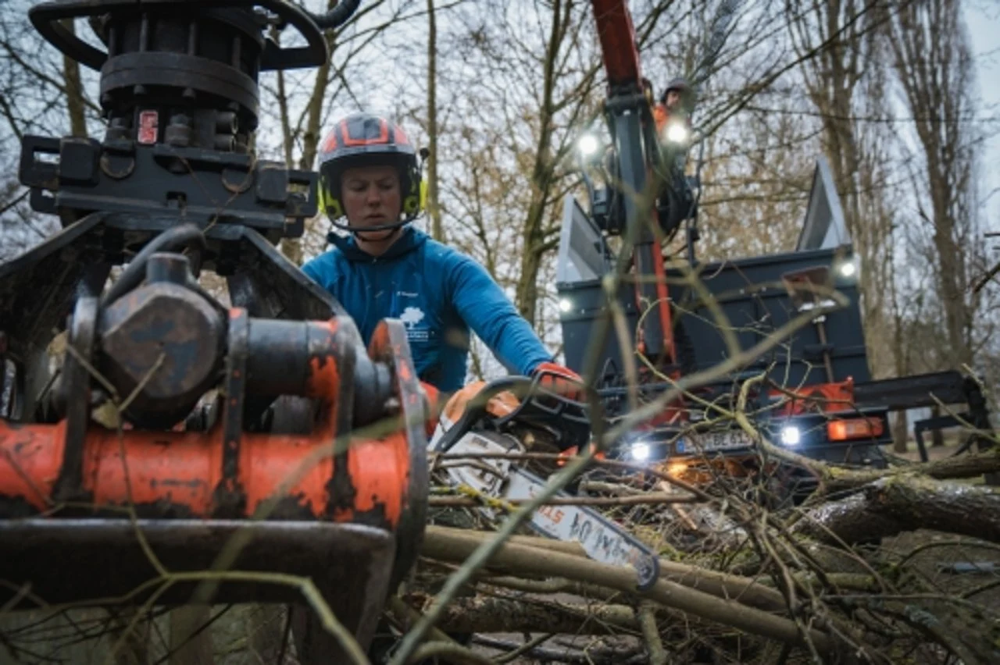

Zeigen Sie Ihren Alltag.
Projekte, Aufgaben und Menschen geben Einblick in die Arbeit. Machen Sie sichtbar, was zukünftige Kollegen erwartet.
Marke aufbauen ↗Wie viele passende Gespräche sollten Sie einplanen? Wie stellen Sie Ihre Suche auf? Finden Sie es heraus – mit einem Ergebnis, das Sie direkt weiterbringt.
03 / IHRE AUSWERTUNG
Für mindestens eine Einstellung bei Ihrer gewählten Annahme.
20 % ist eine frei gewählte Beispielannahme. Passen Sie den Wert an Ihre Erfahrung an.
Gleiches Einstellungsziel, unterschiedliche Annahmen. Tippen Sie auf ein Szenario.
Sie sehen Ihr vollständiges Ergebnis ohne Kontaktdaten. Erst beim Absenden des Anfrageformulars erhalten wir Ihren Suchplan.
Das Modell berechnet, wie viele voneinander unabhängige, qualifizierte Gespräche nötig wären, um Ihre gewünschte Chance auf mindestens die angegebene Zahl von Einstellungen zu erreichen. Die Einstellungsquote pro Gespräch ist Ihre veränderbare Annahme, keine Greenfield-Erfolgsquote.
Bei einer Stelle gilt: Chance = 1 − (1 − Quote)Gespräche. Bei mehreren Stellen verwenden wir die Binomialverteilung. Für alle Gespräche wird dieselbe Quote angenommen. In der Realität können Passung, Vergütung, Wettbewerb, Absagen und zeitliche Abhängigkeiten das Ergebnis verändern.
Branche und Suchprofil bestimmen die Hinweise, nicht die Beispielquote. Die PLZ ordnet Ihren Suchplan zu; wir fragen keine regionale Kandidatendatenbank ab. Der Suchradius ist eine Planungsvorgabe. Er sagt nichts über die Zahl erreichbarer Fachkräfte aus.
Als qualifiziert zählt hier ein Gespräch, bei dem fachliche Voraussetzungen, Interesse und grundsätzliche Rahmenbedingungen vorab passen. Der Check berechnet keine Bewerbungen, vorhandenen Kandidaten oder garantierten Einstellungen.
Recruiting beginnt vor der offenen Stelle. Ein Betrieb, den Menschen kennen und verstehen, kann seine Stärken auch als Arbeitgeber zeigen.
Projekte, Aufgaben und Menschen geben Einblick in die Arbeit. Machen Sie sichtbar, was zukünftige Kollegen erwartet.
Marke aufbauen ↗Verbinden Sie digitale Ansprache, Empfehlungen und einen klaren Bewerbungsweg. Unterschiedliche Menschen erreichen Sie über unterschiedliche Wege.
Recruiting kennenlernen ↗Klären Sie Aufgaben, Vergütung, Anfahrt und Entwicklung früh. So bekommt ein gutes Gespräch eine verlässliche Grundlage.
Kunden erzählen ↗Zum Hintergrund verschiedener Suchwege: IAB-Stellenerhebung 1/2025 ↗. Daraus wird keine individuelle Besetzungswahrscheinlichkeit abgeleitet.
Lass uns herausfinden, wie dein Betrieb als Marke wächst – und die richtigen Menschen gewinnt.
Kostenloses Gespräch vereinbaren